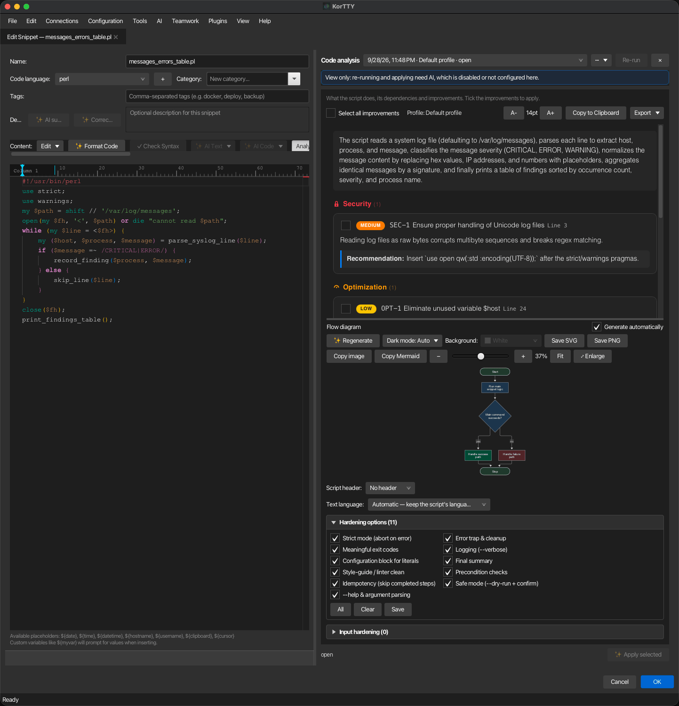

Snippet manager¶
The Snippet Manager lets you store, organize, and quickly insert reusable code snippets, scripts, and configuration templates. Manage snippets across multiple languages with syntax highlighting, advanced search, AI-assisted editing, placeholder variables, and flexible export options.
Overview¶
The Snippet Manager includes the following features:
- System (OS) column — A sortable operating-system column for each snippet (Any, Linux, macOS, Windows). Auto-set when a snippet is created via Generate Workflow Script.
- Sortable columns — All columns (Name, Analysis, Language, Category, System, Tags, Lines, Last modified, Used) are sortable.
- Analysis column — Shows the state of each snippet's stored Full code analysis at a glance: ⚠ 3 — three findings of the newest analysis are not applied to the saved snippet yet; ◷ — a result waits for your review ("Review later"); ✓ — every finding was applied, or the analysis found nothing to fix; ↻ after the symbol — the snippet changed since that analysis. Hover a cell for the details and the date of the analysis. The column is filled in the background when the Snippet Manager opens and follows every new analysis, apply, discard and save, so even a library with hundreds of snippets opens without waiting. Sorting by it puts pending reviews first, then the snippets with the most open findings.
- Analysis filter — The drop-down next to the category filter narrows the list to the snippets that need attention: Open findings, Stale analysis or Review pending — an inbox for results you kept for later. All snippets shows everything again. It combines with the search and the category filter.
- Lines and Last modified — Lines shows the number of lines in the snippet, Last modified the date and time of its last change (the creation time for a snippet that was never edited).
- Resizable columns — Every column can be resized by dragging its header border; korTTY remembers the widths across sessions.
- Script-Header category — A fixed, non-deletable category containing reusable header templates for workflow-script generation.
Opening the Snippet Manager¶
- Menu: Tools → Snippet Manager
- Shortcut: Ctrl+Shift+S (Cmd+Shift+S on macOS)
The Snippet Manager is one workspace: the snippet library (search, category filter, the snippet table and its actions) on the left, and the snippets you work on as tabs on the right. Each main window has one Snippet Manager — a window of its own, or a tab when Open tool windows as tabs is on. Opening it again brings the existing one to the front and puts the cursor in the search field.
- Browse — Click a row, or move through the list with the arrow keys, to show the snippet in the read-only Preview tab. There is only one preview tab; browsing replaces its content and never starts an editor or an AI action.
- Edit — Double-click a row, press Enter in the list, click Edit, or simply start typing in the preview. The snippet then opens in its own editor tab, and the character you typed goes into it. A snippet is open in at most one editor tab, across all main windows; opening it again selects that tab. A snippet that is already open in another main window shows a Go to editor banner in the preview instead.
- Tabs — Tabs with unsaved changes show a dot (●) after the name, a small spinner shows that an AI action is running in that tab. Right-click a tab for Close, Close others, Close all and Show in list.
- Actions — Save saves the active tab (also Ctrl+S, Cmd+S on macOS), Save as new snippet stores the active tab's form as a new snippet and leaves the original unchanged, Close tab closes it (also Ctrl+W, Cmd+W on macOS) and asks about unsaved changes. The ☰ button (Ctrl+B, Cmd+B on macOS) hides the library so the editor gets the full width, and brings it back.
- Closing — Esc never closes the Snippet Manager. Closing it (window close button, Ctrl+Q, or the × of its main-window tab) asks once for everything that is unsaved: the editor's own question for one snippet, or Save all / Discard all / Cancel for several.
- Unsaved changes are never lost silently — Every other way of closing asks the same question before anything closes: Ctrl+W (Cmd+W on macOS) on the Snippet Manager's or a snippet editor's main-window tab, Close all tabs, opening a project, closing the main window and quitting korTTY. Cancel keeps everything open. Quitting also asks snippet editor windows that belong to no main window, for example the one opened from the swarm window.
- Unsaved changes survive a crash — While an editor has unsaved changes, korTTY keeps a draft of its form (name, language, category, tags, description and code) two seconds after the last change in
~/.kortty/snippet-drafts/, readable only by you and not part of the backup. Saving or discarding the changes removes the draft. If korTTY crashed or was killed, opening the snippet again shows Unsaved changes from … were found above the form with Restore and Discard; nothing is applied until you choose Restore, which fills the form and leaves the tab unsaved so you can review before saving. The banner also mentions when the snippet was saved differently since the draft was taken. Drafts of new snippets that were never saved are offered when the Snippet Manager opens (Unsaved new snippets found); Restore opens each one in a new editor tab. This applies to Snippet Manager tabs and to snippet editor windows opened elsewhere, not to editors of files from the SFTP Manager or the local file browser. - Deleting — A snippet with unsaved changes in an open editor cannot be deleted; korTTY shows that editor instead. The editor tab of a deleted snippet without unsaved changes closes.
Note
Snippets opened from other places — the SFTP Manager, the local file browser, the terminal, the AI chat, the AI agent and the swarm window — still open in their own editor window (or main-window tab), exactly as before. A snippet that is open in such an editor is not opened a second time in the Snippet Manager; korTTY brings that editor to the front instead.
Creating and editing snippets¶
- Click Add in the library for a new snippet (it opens in a new editor tab), or open an existing snippet as described above.
- Fill in the fields:
- Name — A descriptive name.
- Code language — Select the programming language (Bash, Python, Java, JavaScript, TypeScript, SQL, XML, JSON, YAML, and more). Enables syntax highlighting. The add (+) button next to the list adds a language that is not offered yet: type its name once and it is stored and offered in every future snippet editor. A self-added language is used for the AI prompts and the file extension; syntax highlighting falls back to plain text unless korTTY happens to ship a grammar for it.
- Text language — What language AI-written code should use for comments and for messages shown to users, logged, or printed as help. The default, Automatic — keep the script's language, leaves the snippet's own prose alone: korTTY writes new text in the language the script already uses and translates nothing. Picking a language instead is a deliberate instruction to convert the snippet's existing text into it. It is independent of the korTTY interface language. Tick Remember as default to keep the choice for future snippets; otherwise it applies to this editor only.
- Category — Select an existing category or type a new one. The fixed non-deletable Script-Header category contains reusable header templates for generated workflow scripts.
- System — Optionally select a target operating system (Any, Linux, macOS, Windows). Auto-set when created via Generate Workflow Script based on the agent's probed OS; you can manually override it for any snippet.
- Tags — Comma-separated keywords for searching (e.g.,
docker, deploy, backup). - Description — Optional free-text description of the snippet.
- Content — The snippet code. The editor provides live syntax highlighting based on the selected language.
- Click Save (or press Ctrl+S, Cmd+S on macOS). The tab stays open, and the library row updates in place and stays selected. When editing an existing entry, Save as new snippet stores the current content as a new snippet with a new ID and leaves the original unchanged; the new snippet replaces the original in the tab.
Editor toolbar and features¶
The snippet editor toolbar provides:
- Format Code — Format the content using local formatters or AI-assisted formatting.
- Check Syntax — Validate the syntax (local or AI-assisted).
- AI Text — Correct spelling, translate, or generate technical descriptions.
- AI Code — Complete code, run a full code analysis, improve a selection (readability, robustness, performance, comments, or a custom instruction), migrate the snippet into a single language, check security, or generate diagrams.
- One-liner — Export as a terminal one-liner.
- Editor zoom — Adjust text size with Ctrl++ and Ctrl+-, also when the editor is a main-window tab or a Snippet Manager tab.
- Editor profiles — Switch between built-in IntelliJ-inspired profiles and custom color schemes.
- Background brightness — Adjust editor background.
- Word Wrap — Toggle line wrapping.
- Line numbers — Toggle line-number display.
When the editor opens from the SFTP Manager for a local or remote file, the same toolbar remains available and the dialog uses file-mode save buttons.
Column ruler and line-width formatting¶
Above the content field, the column ruler keeps the current caret column fixed at the left as Column N and shows a live marker at the matching editor position. Moving the mouse over the live marker shows Position N. Click the ruler to set a maximum line-length marker (columns 20–240). Right-click that marker to format the content to the selected width or remove the marker.
Line-width formatting works locally only for formatters that support configurable width:
- Prettier-backed web formats (JavaScript, TypeScript, HTML, CSS)
- Python (Black)
- Perl (Perl::Tidy)
For languages without local line-width support, KorTTY asks whether to use AI-assisted formatting. Both local line-width formatting and AI-assisted formatting show a before/after review in the editor area before anything changes; see Reviewing an AI change.
Format Code¶
Format Code uses KorTTY's shared local formatter service:
- Built-in formatters: JSON, XML, YAML/YML, TOML, INI/properties, Groovy
- Bundled formatters: Java (google-java-format), Bash/shell (shfmt), Web/JS/TS/HTML/CSS (Prettier), SQL (sql-formatter), Perl (Perl::Tidy)
- Fallback: Optional PATH fallbacks for developer setups when a bundled formatter is missing
Prettier runs as its offline Standalone browser build with only the Babel, Estree, TypeScript, HTML and PostCSS plugins; SQL uses the bundled sql-formatter browser build. Both are initialized lazily in an isolated JavaFX WebView and need no installed or packaged Node.js runtime. Requests are serialized and retain the same 15-second timeout, provider display and configurable Prettier line width as the process backend; a failed or timed-out engine is discarded before the next request.
If local formatting is unavailable and the configured AI profile provides snippet AI capability, KorTTY asks whether to use AI assistance. AI formatting is applied only after the before/after preview is accepted.
Editor profiles¶
Switch between:
- Current custom colors — User-defined palette
- 10 built-in IntelliJ-inspired profiles — Predefined color schemes
- User-created profiles — Custom profiles you create
Profiles store foreground/background colors, syntax colors, cursor color, and cursor style.

AI-assisted editor functions¶
If AI is configured, the snippet editor offers additional actions:
AI suggestions¶
- AI suggestion — Generates a file name, description, Code language and Text language from the current code content. A detected code language that is not in the list yet is added to it, so the detection is never silently dropped.
- Correct spelling — On the description field; sends only description text to the AI.
Text language¶
When AI is configured, Text language — directly below Code language in the editor form — chooses what language AI-written code uses for its comments and messages, and which language spelling correction works in.
Its default is Automatic — keep the script's language. korTTY works out which language the snippet's comments and messages are already written in and requires the AI to keep it: existing text is left as it is, and anything new is written to match. A script commented in English stays English even when you run korTTY in German. Identifiers, file paths, commands, options, configuration keys and other code tokens are never touched in either mode.
Selecting a language instead is an explicit instruction to convert the snippet's prose into it — the previous behaviour, now opt-in rather than automatic. A selection-based action applies the contract to its returned selection, a full replacement to the complete script.
When korTTY cannot tell which language a script uses — there is too little text to judge, or the comments mix languages — it asks before changing anything, rather than guessing. Tick Remember for this snippet in that dialog and the question is not asked again for that snippet. Dismissing the dialog cancels the action and leaves the code untouched.
All of this is independent of both the korTTY interface language and the Code language selector, which continues to define the programming language and syntax highlighting. Analysis reports, improvement descriptions and analysis-diagram labels always follow the korTTY interface language.
The list offers korTTY's own interface languages plus any AI-generated language you have added. AI suggestion can also fill it for you: it reads the snippet's comments and its printed output (echo, print, printf, Write-Host and similar) and preselects the language it finds — including a language korTTY has no interface translation for, which is then added to the list. A script without any human-readable text leaves the current choice untouched.
Leave Remember as default unticked for a temporary choice that applies only to the current editor window. Tick it to save the selected language as the default for newly opened snippet editors; this updates the existing Default language for AI text in code setting under Settings → AI. Other editor windows that are already open keep their own selection.
Spelling correction uses the selected language for grammar and spelling rules without translating the text. Translate selection… keeps its separate target-language dialog and initially selects the current text language. Local formatters and syntax checks are unaffected.
AI Text menu¶
- Correct spelling in selection — Fix typos in selected text.
- Translate selection… — Translate selected text to another language.
- Technical description — Generate documentation for selected code or the whole snippet.
Optional additional instructions¶
If enabled in Settings → AI, the editor shows a shared instructions field sent with spelling correction, translation, and technical description requests.
Last AI change toggle¶
The ↺ button switches between the original code and the last AI-generated editor change.
AI Code completions¶
The snippet editor offers two kinds of code completion, both inside the Monaco editor: a completion list you open on demand, and optional ghost text that appears on its own after a typing pause. The keys are listed under Keyboard shortcuts.
- Completion list — Press Shift+Tab with the cursor at the end of a line that has text on it, or Ctrl+Space anywhere in the editor (on macOS that is the physical Ctrl key; because macOS often reserves Ctrl+Space for switching input sources, Cmd+I and Alt+Esc open the list as well). The list opens at once with candidates harvested from the snippet itself — the arrays, hashes, variables and functions that fit the spot, followed by idioms of the language: after
for x inin a Bash script every array comes first, afteruse POSIXin Perl the usualqw(...)import lists. Up / Down move the selection, typing filters the list, Enter or Tab inserts the selected entry, and Esc closes the list. An idiom with placeholders is inserted as a template in which Tab jumps from one placeholder to the next. AI Complete in the AI Code menu and in the editor's context menu opens the same list. Tab still indents, and Shift+Tab anywhere but at the end of a non-empty line still outdents. The combination is yours to choose: Configuration → Global Settings → Snippet Editor has an AI Completion Shortcut field that records whatever you press — one key, or one key with up to three modifiers — and applies it to snippet editors opened afterwards, while Ctrl+Space keeps working; see Snippet Editor settings. - AI candidates — When an AI profile is configured, every list also asks the model for up to five completions. They are marked with a ✦ star, sort after the local entries, and join the open list as they arrive — the local entries are usable in the meantime, and the status line reports the request and how many candidates it added. The list's selection jumps back to its first entry when they arrive. While another AI action of the editor is running, the list shows only the local candidates.
- Auto AI Complete — A toggle in the AI Code menu that turns on ghost text: when you pause for a moment with the cursor at the end of a non-empty line, the model's continuation appears greyed out after the cursor. Tab accepts it, Esc dismisses it, and Alt+] / Alt+[ step through the alternatives (the physical
]and[keys of a US layout, whatever they print on yours). Off by default and remembered only for the current editor session; a data notice asks for your consent once per application start, not once per editor. While a ghost-text request runs, the hint bar shows it with a Cancel button; the list's own AI request reports in the status line only. - Language services — For JavaScript, TypeScript, JSON, CSS and HTML, Monaco's own language suggestions appear in the same list beside korTTY's candidates. The first list in such a snippet can take a moment while the language service starts.
A completion request never blocks the editor's other AI actions. Starting one of them — Full code analysis, an improvement, a security check, a diagram — cancels a running completion request, stops the ghost-text timer and hides visible ghost text, so the two cannot overlap. A completion request that has not answered after 30 seconds is abandoned, whatever timeout the profile allows. An accepted AI entry or ghost text counts as an AI change, so the ↺ button switches back to the text before it; local entries are ordinary edits.
AI Code actions¶
The AI Code menu groups the actions that read or rewrite the code itself:
- AI Complete / Auto AI Complete — AI Complete opens the completion list at the cursor, the same list Shift+Tab opens; Auto AI Complete toggles ghost text after a typing pause (see AI Code completions above).
- Full code analysis — Shows a rich, stored analysis in the editor's side panel: a plain-language summary of what the script does, its external dependencies, categorized improvement suggestions you can tick and apply, and an auto-generated flow diagram. See Full code analysis below.
- Improve readability / robustness / performance — Rewrites the selected code region toward one goal without unrelated changes. Before Improve robustness starts, it displays two optional panels for additional rules: Hardening options, Input hardening. If at least one rule is active, KorTTY rewrites the complete snippet so it can apply global prologue or epilogue changes.
- Optimize code comments — Comments the selected code region: the AI inserts explanations of what the code does and why directly above or beside the lines they belong to, using the language's own comment syntax, and replaces outdated or misleading comments. Executable code stays untouched. The comments are written in the editor's Text language. Available from the AI Code menu and from the editor's right-click menu on a selection.
- Custom improvement… — Rewrites the selected code region following a free-text instruction you type. It displays the same two optional rule panels: Hardening options, Input hardening. As with Improve robustness, KorTTY rewrites the complete snippet when any hardening rule is active.
- Migrate into one language… — Rewrites a mixed-language snippet so that all of it is written in one target language. KorTTY detects the mix locally and only offers what actually applies; an orchestration format (Azure DevOps pipeline, GitHub Actions, Jenkinsfile, Ansible, …) embeds shell by design and is therefore never migrated as a whole — only its script steps can be unified, and a platform conversion is offered but never preselected. See Language unification.
- Security Check — Generates a security report. Select findings to fix; KorTTY applies them with a before/after preview that highlights what changed and why. See Security Check below.
- Diagram — Opens the snippet's saved diagrams, or generates the first logical-structure flowchart when none exists yet. A snippet can store several diagrams across five families — logical structure, sequence, state, class, and ER. See Mermaid diagrams below.
The editor context menu also offers AI Assistant…, which opens an instruction dialog for the current cursor position: KorTTY sends the full snippet, cursor offset, line, column, and your instruction to the configured AI profile and shows the result as a before/after preview.
The context menu additionally has a Generate diagram submenu listing the five diagram families. With a code selection its label switches to Generate diagram from selection and the chosen family diagrams only the selected lines — the selection is snapped to whole lines and the resulting diagram remembers its line range. Without a selection the whole snippet is diagrammed. Every generated diagram is added to the snippet's saved diagrams; see Mermaid diagrams.
Readability, performance, comment optimization, and a custom improvement rewrite only the selected region when both hardening panels have no selected rules, so select a code region first. Improve robustness and Custom improvement instead rewrite the complete snippet whenever a classic hardening option or supported Input hardening guard is active, because those rules may need the prologue and epilogue. Every result is reviewed in the editor area before anything is applied (see Reviewing an AI change); an incomplete full-script response with an omission marker is refused.
Warning
Snippet AI actions send the current snippet content, selection or cursor metadata, and prompt instructions to the configured default AI profile (or, for Security Check, the dedicated security-check profile). Eligible actions can additionally send enabled, configurable AI Skills; the source-only diagram request sends no configurable library skill and instead always carries korTTY's compact built-in action skill for the chosen diagram family. Snippet AI actions do not enable internet tools, even when the selected profile has internet access. Code completion is more restrained: the local candidates in the completion list are computed by korTTY itself and never leave the machine, and an AI completion request sends only the code around the cursor — up to 6,000 characters before it and 1,500 after it — together with the names of the snippet's arrays, variables and functions, rather than the whole snippet. Completion requests skip knowledge stores; locally matched AI Skills still apply. Auto AI Complete repeats that request after every typing pause while it is on, so leave it off for sensitive snippets unless you trust the configured endpoint.
Reviewing an AI change¶
Improvements, Migrate into one language…, AI Assistant…, security fixes, AI-assisted formatting and line-width formatting never open a window of their own for their result. The review replaces the editor area, exactly like the review of a Full code analysis run: the action's name on top, its summary, the original and the rewritten code side by side with the changed lines highlighted, and Reject / Accept & apply at the bottom (++shortcut+enter++ accepts; Esc does nothing there, so it cannot close the editor by accident). Nothing waits in a blocking dialog, so terminal sessions, other snippet editor tabs and their reviews all stay usable while you read the diff.
- Only unchanged content is replaced — The editor stays editable while the AI works. If you changed the snippet before the result arrived, Accept & apply is disabled, because it would overwrite your edits. Run again on the current content repeats the AI action on what the editor holds now. It is offered when the action worked on the whole snippet; for a selection, select the region again and restart the action, and for line-width formatting simply format again.
- One review at a time — While a change waits for your decision, the other AI actions in that editor are disabled, so a second result can never replace the one you are looking at. A result that still arrives meanwhile — for example a stored Full code analysis review you reopen from the panel — waits in line and appears as soon as the current review is decided.
- Re-run with another profile — Where the action supports it, the review's toolbar has the transient AI-profile picker and Re-run; the current review is discarded and the action runs again.
- Undo — After Accept & apply, the ↺ button switches between the code before and after the accepted change (see Last AI change toggle).
The result windows that do not rewrite the code — the Security Check report, the technical description, the alternative solutions, the AI syntax check and the editor-profile dialog — open beside the editor without blocking it or the rest of korTTY. Each kind is open at most once per editor — a new result replaces the older window, and Alternative solution brings its open dialog to the front — and closes together with its editor.
Full code analysis¶

Full code analysis examines the whole snippet at once and offers concrete improvements you can apply. The result appears in the analysis panel, a side panel inside the snippet editor itself — no separate window opens, in the snippet workspace's editor tabs and in every standalone editor alike. Show or hide it with the Analysis button in the editor's content toolbar or AI Code → Show/hide analysis panel; the button carries a badge: ● when a stored analysis exists, ⚠ when the snippet changed since that analysis, and ⏳ while an analysis or an apply runs (also while the panel is hidden). Drag the divider to resize the panel; korTTY remembers its width and whether you left it open, and a standalone editor window grows once by the panel's width when the screen has room. Hiding the panel never cancels anything: a running apply keeps going and its progress shows in the editor's hint bar and on the badge.
Every result is stored. The analysis is saved with the snippet the moment it arrives — independently of the editor's own Save or Cancel — together with the flow diagram once it is generated, the findings and options you tick, every apply run and every export. Close the editor, the workspace or korTTY itself and open the snippet again: the stored analysis, its diagram and your selection come back without any new AI request. Up to five analyses per snippet are kept by default (the newest is current); the number is set under Stored analyses per snippet in the Snippet Editor settings. When the snippet has changed since the shown analysis, a banner says so. A new, never-saved snippet keeps its analysis in memory until you save it (the panel says Not stored permanently yet), and analyses of external files and policy-managed snippets are kept only while their editor is open. Viewing and exporting always work; Re-run and Apply selected need AI, so they are disabled when a policy turns AI off or no AI profile is configured.
The report and the flow diagram are generated by two separate AI requests: the analysis request returns the summary, dependencies and improvements, and as soon as the window opens the diagram pane starts its own dedicated diagram request — the same focused request Regenerate uses — while a spinner is shown. Each request carries one line-numbered copy of the script; neither repeats a second raw-script copy in the same prompt. The analysis request always sends the complete script. The diagram request sends it complete up to 400 lines and, above that, a condensed structural outline instead: its definitions and top-level flow with the elided runs marked and the original line numbers kept, so code references still point at real snippet lines. Sending every line of a four-thousand-line script made models transcribe it rather than summarize it. Over OpenAI-compatible HTTP, korTTY constrains the initial analysis report to a strict summary/dependencies/improvements JSON schema, and the diagram answer to its own title/mermaid/codeReferences schema — the diagram grammar requires quoted node labels, and an endpoint that honors the schema cannot lose their escaping. Both retry once without the schema only when the endpoint explicitly rejects structured output; malformed model output is not retried, and a diagram is never re-requested at all. The diagram request is deliberately compact and source-grounded: it uses the fixed Mermaid schema, the script and label language, and an immutable built-in Mermaid action skill, but it does not add configurable library skills or knowledge-store excerpts. That required skill maps runtime control flow rather than declaration order, groups repeated same-purpose work, retains real decisions, error paths and loop exits, and requires every node to lie on a connected path from start to stop with an exact source range. If the none Reasoning value is available and the active profile has a fixed model selection, korTTY automatically sets that value for this request only; otherwise it keeps the profile's configured value, and the stored profile is never changed. An Auto profile is not overridden from previously discovered capabilities because its loaded model can change; an explicitly configured none value still applies. OpenAI-compatible HTTP, LM Studio native, and embedded llama.cpp/MLX transports cap the diagram response at 32,768 output tokens; Anthropic retains its separate provider cap. That cap covers the whole completion, so it deliberately leaves room for a thinking model's hidden reasoning: the diagram JSON itself is far smaller, but a model that reasons can otherwise spend the entire budget before emitting a single character. For embedded llama.cpp/MLX, korTTY does not repeat a response that is empty or contains only the model's reasoning. The automatic diagram request can be turned off with the Generate automatically checkbox in the diagram pane's header. Details are under Below the report — flow diagram below. Keeping the diagram out of the analysis request produces markedly more faithful flowcharts, especially with local models, and the report is readable while the diagram is still loading. Clicking Re-run repeats the analysis with the selected profile and configurable AI Skills and starts the separate dedicated diagram request with the same mandatory Mermaid skill. Starting another generation or closing the diagram view cancels its superseded client request.
Before accepting a fresh AI result, korTTY rejects disconnected nodes, backward terminal paths, incomplete decision branches, and a runaway node count — the diagram request states the snippet's node limit to the model (12 for snippets up to 200 lines, growing linearly to 24 at 1,000 lines or more), and the validator rejects a diagram only when it exceeds three times that limit (36, or 72), so an over-drawn summary keeps its diagram while a transcription of the script does not. A node declared more than once — a model that draws every node as a box in a chain and again as a decision on its own line — keeps its first declaration, and counts as one node when korTTY compares what the model drew with what the repairs kept. That comparison covers nodes and edges alike: a diagram whose repairs drop more than half of either is refused for the local fallback, because a model that draws branches the strict dialect cannot show keeps most of its nodes while what would be rendered is a straight chain of them. A node without a valid source mapping no longer discards the diagram; it simply has no hover reference, and the log names the unmapped nodes. A rejected diagram answer is kept whole under ai-answers/ in the log directory, like an unusable apply answer: the rejection names one broken rule, and whether the grammar could learn the shorthand the model wrote is only decidable on the whole answer. The general renderer stays backward-compatible with safe diagrams saved by older korTTY versions. If the answer's JSON envelope cannot be read — typically because the model wrote korTTY's required quoted labels into the JSON string without escaping them — the diagram is recovered from the answer's own text (inline <think> reasoning is skipped first), validated exactly like any other, and used without asking the model again. A model that escapes the mermaid value's line breaks twice — valid JSON whose value decodes to a single line of literal \n sequences — has those line breaks restored before the grammar reads it, wherever a diagram is validated, rendered or saved: no diagram korTTY accepts is a single line, so the sequences can only be the line breaks, and a source that already carries real line breaks is left exactly as written.
The restricted flowchart grammar reads the Mermaid that models actually write and turns it into its own strict dialect before rendering or saving: nodes declared inline in an edge (start_1(["Start"]) --> n1["Print header"]), chained edges (a --> b --> c), labels as -->|yes| or -- yes -->, the :::class shorthand, unquoted labels and Mermaid's other node shapes (read as actions), plain %% comment lines, and the slips models make — a label whose pipe became a bracket, a shape closed one character early. What the shorthand cannot express is repaired where the intent is unambiguous: a node the model forgot to class gets the neutral default, a second class or a second declaration for the same id is ignored, a decision with one labelled branch gets the complementary label of the response language, a diamond with a single exit is an action, an id that only appears in an edge becomes a node, a stray terminal becomes an action and every dead end continues to stop_1, a start_1 that is missing or never connected is wired to the flow's real entry (the node nothing leads to that reaches most of the diagram), a statement written with a stray class prefix is still read, and a node nothing leads to is pruned. The repairs may trim a diagram but never hollow it out: a result that kept fewer than half of the nodes the model drew, or none, is rejected with that reason. A line it still cannot accept is quoted in the rejection reason, and a diagram that fans out from an action into parallel branches is still rejected, because the dialect has no way to draw it faithfully. classDef, style and linkStyle lines in a fresh answer are dropped rather than rejected — korTTY styles the four semantic classes itself, and a model told to assign them often defines them with colors as well; the log counts what was removed, and a saved diagram is still validated unchanged. If the provider reports that the diagram response was cut off at its cap, the request fails or no safe, usable Mermaid source is returned, korTTY keeps the analysis and shows its deterministic local fallback diagram without silently sending another request. The fallback is labelled: a notice above the diagram says that the AI diagram was rejected and why (for example that it declared more nodes than the limit allows), and the same reason is written to the log, so a fallback is never mistaken for an AI result; the fallback also recognizes indented conditional blocks in common scripting languages.
The summary, dependencies, improvement descriptions and diagram labels use the current korTTY interface language. The separate Text language becomes relevant only after you click Apply selected, because that action returns a full replacement: by default the rewritten script keeps the language its comments and messages are already written in, and only a language explicitly chosen there converts them. The analysis panel carries its own Text language selector, pre-set from the editor's choice, so the decision sits where you tick the improvements. Apply selected and the equivalent security-fix apply action automatically request none Reasoning only when that value is available and the profile has a fixed model selection; an Auto profile keeps its configured or provider-default behavior unless none was explicitly configured. The saved profile remains unchanged. This prevents a reasoning model from consuming the bounded replacement budget before it emits the machine-parsed script. If a provider nevertheless reaches the output limit with no visible answer, korTTY records the usage, reports the localized output-limit failure and leaves the editor unchanged instead of misreporting an ordinary empty response or retrying the request.
A toolbar runs along the top of the panel, the report sits above the flow diagram below it, and a script-header selector plus the collapsible hardening panels follow further down; the report area scrolls when the panel is short, while Apply selected stays in the panel's footer. Re-run never closes anything: the current result stays visible with a re-running banner until the new one arrives, which then becomes the current analysis while the old one stays in the history.
Toolbar:
- Select all improvements — The first control at the far left ticks or unticks all Security, Optimization and Design improvements at once. Extra spacing clearly separates this bulk action from the following Profile: indicator. This control never changes any dependency selection.
- Profile in use — The name of the AI profile the analysis ran with is shown beside this checkbox (for the default profile its actual name is shown, e.g. Profile: LM Studio — not just "Default profile"), so you can always tell which model produced the report.
- AI skills — When AI Skills are configured, a row shows which skills were included and lets you change them; see AI skills for this analysis below.
- Re-run — A transient AI-profile picker plus a Re-run button repeat the analysis with the chosen profile and your current AI-skill selection. The picker resets to the default when the panel is rebuilt.
- A− / A+ — Adjust the reading font size (remembered across sessions).
- Copy — Copy the summary, improvements and dependencies to the clipboard as plain text.
- Export — Save the whole report (including the diagram) as a file; see Export the report below.
Report — analysis and improvements:
- Summary — A short, plain-language description of what the script does. It is a description, not a pickable item, so it is shown as a plain block without a selection accent.
- Improvements — Suggestions grouped into Security, Optimization and Design sections. Each section title carries a colour-coded icon and a count — a padlock for Security, a gauge for Optimization, stacked layers for Design, and a module hexagon for Dependencies — and each suggestion has a severity badge, an explanation, and a concrete recommendation. Tick the ones you want; use Select all improvements to toggle every improvement at once. Empty sections are hidden.
- Dependencies — External programs, scripts or services the snippet relies on, each with its Purpose and a Reduce/replace suggestion. Tick each dependency independently to have its suggestion applied too; Select all improvements leaves these checkboxes unchanged.
Below the report — flow diagram:
- An auto-generated Mermaid flowchart from a dedicated diagram-only request renders while a spinner is shown, then fills the pane. It carries the full diagram toolbar: zoom − / slider / + / Fit, Save SVG / Save PNG, Copy image / Copy Mermaid, a Dark mode control and a Background colour picker (both remembered), and Regenerate. Regenerate deliberately sends one new dedicated source-only diagram request using the profile of the shown analysis; configurable AI Skills and knowledge-store excerpts remain reserved for the analysis request, while the required built-in Mermaid action skill is always included. See Diagram appearance below.
- Hover code references — Moving the mouse over a diagram node shows the matching lines from the snippet, so you can trace each step back to the code — the same behaviour as the standalone Diagram window.
- Generate automatically — A checkbox in the pane's header controls whether the diagram request starts on its own when an analysis without a stored diagram is shown. Untick it to skip the automatic AI request entirely — the pane then shows a hint instead, and Regenerate remains the manual way to request the diagram. Ticking the box while the panel is open fetches the diagram immediately. A stored diagram is always shown as it is, never regenerated behind your back. The choice is remembered across sessions (default: on) and does not affect the standalone Diagram window, which renders saved diagrams without an AI request.
AI skills for this analysis:
When AI Skills are configured, a row at the top of the panel shows exactly which skills were included in the analysis, as chips, with an (auto-selected) or (manual) badge:
- Auto-selected — korTTY pre-selects the skills relevant to the snippet by matching each skill's tags, name and description against the snippet's language and content, and includes at most the two highest-scoring ordinary matches in the analysis. Explicitly pinned or connection-assigned skills remain outside that automatic limit. This is why the badge reads (auto-selected) on the first run.
- Manual selection — Click Select… to open a searchable picker: type in the search field to filter your saved skills by name, description or tags, then tick or untick the skills you want. As soon as you change the set, the badge switches to (manual) and korTTY keeps your choice instead of auto-selecting.
Changing the skills does not re-analyse immediately — the new set is applied to the report request on the next Re-run. That explicit snippet selection, together with any skills assigned to the active connection, is used as an allowlist: korTTY does not run global relevance detection again or append other skills. Skills you include here are sent to the analysis regardless of each skill's configured target; the separate diagram request intentionally omits those configurable skills and always uses its own immutable Mermaid action skill instead. The row appears only when at least one configurable AI Skill is enabled.
Hardening options:
At the bottom, a collapsible Hardening options panel lets you attach production-quality techniques (strict mode, error traps, meaningful exit codes, logging, idempotency, --dry-run, --help, and more) to the fixes that get applied. The panel title includes the number of currently ticked options — for example Hardening options (11) — and korTTY remembers whether you left the panel open or closed and restores that state the next time the panel opens. See Hardening options for what each option means and how it is applied.
Input hardening:
Below it, a second collapsible Input hardening panel asks the AI to build an input-validation guard block into the script when the fixes are applied: parameter allowlists and length limits, file format checks, a maximum input-file size controlled by an adjustable MAX_FILE_SIZE variable, security warnings in the script's own log, and a FORCE=1 / --force override. The size check uses metadata before file content is read, and 0 means unlimited. It is strictly opt-in — the master check box starts unticked — and its title counts only the sub-options that are effectively active. The panel is disabled for YAML/YML/Ansible snippets because a script-level guard does not apply to these declarative formats. See Input hardening for the full guard contract.
Script header:
A Script header selector lets you prepend one of your saved Script-Header snippets (from the fixed Script-Header category) to the code when you apply the analysis. Pick a header — or leave it on No header (the default) — and its content, with variables substituted, is inserted at the top of the snippet, after an existing shebang / lead line, as part of the same change.
Apply selected:
When you click Apply selected, korTTY first settles the Text language question (if the snippet's language cannot be detected, you are asked before anything starts), then processes the ticked improvements, dependency suggestions and hardening options as an atomic sequence on the AI profile that produced the analysis. When the snippet changed since the analysis, a banner first asks whether to Re-run first or Apply to current content. The progress appears at the bottom of the analysis panel. Two independent progress bars at the top track Improvements and Code hardening, followed by elapsed wall-clock time and cumulative token usage reported by the provider; when a provider supplies no usage data, the value is explicitly shown as not reported rather than estimated. The checklist lists improvements first, then classic and Input-hardening requirements. Each analyzed improvement or dependency row places the report's matching colour-coded category icon directly after its ID. Descriptions in this compact checklist are limited to three lines with an ellipsis. The complete descriptions remain visible in the analysis report above it. The checklist no longer repeats category or severity text on the right; severity remains available in the analysis report, while hardening requirements need no redundant category label because they are already grouped under Code hardening. Pending entries use a neutral marker, all entries in the active provider batch are highlighted as running, a repair attempt is marked separately, each completed entry receives a green checkmark on its right, and the failed entry is marked if the sequence stops. If every entry completed and only the final verification rejected the combined result, the header names that instead of pointing at a marked entry. A Cancel button stops the run. When the run ends — completed, failed or cancelled — the progress stays in the panel with a run summary: the final duration, the token usage split into prompt, completion and total, the AI profile the run used, how many work items completed, and the number of repair attempts if there were any. Copy summary puts the same figures on the clipboard. Closing the editor mid-run stops the run and records it as interrupted; after a failure the report stays in the panel so you can inspect the stopped step and retry the selection.
korTTY batches selected analysis items and dependencies into apply stages of up to three items each — six in edit mode, where the three-item limit that keeps a whole-script answer finishable does not apply — then handles classic hardening and Input hardening separately in batches of at most three mandatory requirements. Every stage sends the whole script, so the number of stages is what an apply costs in prompt tokens and time. In edit mode the line-numbered script comes before everything that is specific to the stage or the attempt — the items, the requirements, the repair paragraphs and the line count — so every request of a run shares one prefix: system prompt, contract, language lines, and the script up to the first line the previous stage changed. An endpoint with a prefix cache serves that prefix without processing it again (MiniMax reports it as cached tokens; LM Studio and llama.cpp reuse their KV cache), which is time on a local model and money on a metered one; a repeated attempt with unchanged input shares the whole script. Measured before this order, consecutive stages shared 128 tokens, because the stage's items sat in front of the 62,000 tokens of script. Every stage receives the complete result of the previous stage and must preserve its existing behaviour.
For a snippet of up to 400 lines each stage returns the complete rewritten script. Above that it works in edit mode: the stage receives the line-numbered snippet and returns only the changed regions — edits with a 1-based startLine/endLine range and the replacement lines — which korTTY applies locally before running exactly the same verification as for a returned script. Replacement lines are taken exactly as returned — their indentation, blank lines and a repeated closing keyword are the code, not noise — and an edit with an entry that is not a string is left to the repair round. A 4,000-line script returned complete is around 60,000 output tokens, at the model's completion cap and twelve minutes per stage, and one lost quotation mark in that much JSON lost all of it; the changed regions are a few hundred lines at most. An edit whose range starts outside the snippet, reaches more than one line past its end, overlaps an earlier edit, or is hollow — a range of three or more lines whose replacement is nothing but its own unchanged first line, the signature of a model that emitted one entry and stopped; a range shortened by its last lines is a deletion and is applied — is left out with a note in the log while the trustworthy edits are applied. So that the repair round really asks for what a dropped edit was meant to do, a changes entry whose anchor line comes from a dropped edit and from no applied one is ignored, which leaves its analysis id unechoed. An edit-mode stage whose answer ran into its output-token limit gets one second attempt as well, asking for the changed regions only: such an answer holds the changed regions alone, so the limit is a runaway answer rather than the stage's real size, and how long an answer the model writes varies per attempt.
A whole-file answer still fails there, since for a large script the limit is the real constraint. A stage none of whose edits can be applied, or whose edits collapse the script — seen live as two edits "covering" 1,199 lines with an omission marker in place of the code; in edit mode the omission-marker check looks at each edit (a range of three or more lines replaced by nothing but such a comment) rather than at the whole script, since a comment that merely mentions unchanged code among real lines is just a comment — gets one second attempt whose request says what was wrong with the first answer (the answer is archived like an unusable one), the same single second chance a collapsed whole-file answer gets, and is refused like an incomplete script if that fails too. An applied edit that shrinks a region of a hundred lines or more to less than a tenth is named in the log. An edit-mode answer whose JSON does not parse is read tolerantly before it is requested again.
Live answers from MiniMax-M3 showed what actually breaks: a quotation mark inside a code line left unescaped, an escape JSON does not know such as \$, a missing ] before an edit's closing brace or a missing } between two edits, a trailing comma, a newline inside an entry, and the summary written as a nested object. The recovery reads every edit's line range and replacement lines from the text itself. When every replacement line sits on its own line the line end is the boundary and nothing can mislead it; in a compact one-line answer the boundary is the answer's own delimiter — "," or ", ", whichever style the model used for its keys — and a bracket only closes the array when structure, not code, follows it. Whatever the read cannot be certain about fails it: a compact entry left with an odd number of raw quotes (the split fell inside a quoted pair — unless the entry plus one quote is a line of the snippet, the signature of a closing quote the model swallowed, as in res="" written as res="; a code line ending in a quote whose escaped last quote the model fused with the closing quote, as in body="{" written as body=\"{\" followed by the next entry, is read the same way when the snippet knows the line, and so is a known line in which the model escaped one quote and left the others raw). The transport judges an edit answer with the same snippet oracle before deciding on a schemaless retry, so an answer the stage can read is never requested a second time, a bracket followed by anything but stacked closers and the next key or edit, a scan that runs into the answer's own keys (the array was never closed), a raw quote pair in the other delimiter style, a wrapped line holding several entries, a bare } line inside an entry that a raw line break split, and two entries of which one plus the delimiter is part of a line of the snippet (a code line such as awk -F"," that was split in two, even when the model also changed it). It is all or nothing: every edit in the answer must be readable, each with exactly one endLine, or the answer goes the retry route rather than applying half of what the model meant. The log says when edits were recovered this way.
The analysis answer gets its own, simpler repair: its fields are prose, where a quote that is not followed by a JSON terminator is content, so a raw quote pair inside a title, detail or suggestion — which once cost a complete 24,000-character analysis of a 4,000-line script — is escaped and the answer read; an analysis korTTY still cannot use is archived like an unusable edit answer. The contract deliberately does not ask the model to put every entry on its own line: tested live, MiniMax-M3 read that as one entry per edit and answered with ranges replaced by their first line, or with hundreds of one-line edits up to the output cap. On endpoints that accept response_format and ignore it, such as MiniMax, the JSON-only reminder that only the schemaless retry used to carry is sent with the first attempt as well. When the retry does happen, the log names how the first answer failed — an unparsable JSON-shaped answer, one the model abbreviated itself with ... or etc, one that was cut off, a fenced block, prose — together with the place the JSON broke (Gson's line, column and path such as $.edits[3].replacementLines[7], and the text around it), and the complete answer is kept as a file under ai-answers/ in the log directory (the twenty most recent, and never longer than the log retention days, since they hold script regions in plain text), named in the same log line, so a failed stage can be diagnosed from a report without debug logging. A streamed answer that the endpoint never closed — no finish_reason and no [DONE] — is logged as such, with the raw stream kept in the same place, because an answer that stops mid-string a few thousand tokens in reads as "cut off" and only the raw stream tells whether the model stopped or the connection did. The request log shows the prompt tokens an endpoint served from its prefix cache when it reports them. The log names how many edits covered how many lines, and the output cap for an edit-mode stage is 32,768 tokens so a model that transcribes the file anyway is stopped early.
Every stage also opens with one log line — its number, phase, analysis ids, requirement ids, line count and mode — and a stage whose result is kept but gets the repair attempt for work it did not verify says so, naming the requirements not verified, the earlier requirements it dropped, or the analysis ids it did not echo, so a log alone maps every request to its stage and to the reason for a fourth request in a three-stage run. An improvement the model did not echo in changes[].finding opens that repair round; a dependency suggestion it did not echo does not — a reduce/replace suggestion ("consider consolidating", "prefer dig") may rightly leave the code alone, and a model that changed nothing seldom echoes the id, so asking again cost two full requests in a 47-item run for nothing the items needed. Such a stage is accepted with the unechoed suggestions named in the log. When another cause does open the repair round, the suggestions it did not echo are named in that request as suggestions — implement where it applies, otherwise leave the code and do not echo — not as items to apply. A suggestion whose edit was dropped (hollow, overlapping, out of range) still opens the round like an improvement, since the model did try to change it; and an id that names an improvement counts as one even when a suggestion shares it, because the ids are the model's own. Intermediate scripts are never inserted into the editor.
If a stage's response stream is dropped mid-answer by the connection, korTTY retries that stage once automatically — distinct from the fragment-repair attempt below — before giving up. If a stage still fails, is cut off or returns an incomplete replacement — or you stop the run with Cancel — before the first stage has completed, korTTY discards the sequence and leaves the editor unchanged. After at least one completed stage, the progress area shows an inline recovery offer instead of a prompt: Continue remaining stages resumes the run at the aborted stage and repeats it while keeping the completed stages' work — the checklist starts with those stages already checked off, and the final cumulative verification still covers the whole selection; Preview partial result opens the completed stages' combined rewrite in the review — each completed stage's requirements were already verified when that stage finished, and only the final cumulative re-check is skipped, because requirements of stages that never ran are missing by definition, while the degenerate-replacement guard still applies; Discard hides the offer. If a resumed run aborts again, the offer reappears with the newer state. When every stage completed and only the final cumulative verification failed, the offer omits the resume choice, since re-running zero remaining stages would fail identically. A run interrupted by closing the editor keeps its partial result, so Preview partial result is offered again when the snippet is reopened. Continue remaining stages is offered then too — also after restarting korTTY — as long as the editor still holds exactly the content the run started from: korTTY rebuilds the run from what it stored (the ticked findings, your additional instructions, the hardening rules, the text language and the language or platform target) and continues after the last completed stage. If the code changed since, the offer says so and only the partial preview remains; if the rebuilt plan no longer has the stored number of stages, the offer reads Cannot resume and you apply again to re-plan.
Reviewing the result: a fully completed sequence replaces the editor area with the review — the original and the rewritten script side by side, with changed lines highlighted and per-change reasons — until you decide with Accept & apply, Reject or Review later (++shortcut+enter++ accepts; Esc does nothing there, so it cannot close the editor by accident). The editor text changes only on Accept & apply, and only when it still holds exactly the content the run started from; if you edited the snippet in the meantime, Accept is disabled and Re-plan on current content starts a fresh apply of the same selection instead. Review later gives the editor area back and keeps the result stored: the panel shows A result is waiting for your review with Review changes, also after closing the editor or restarting korTTY. Accepted findings are marked ✓ Applied in the report; until you save the snippet, the analysis counts as accepted, not saved.
This uses more model calls and can consume more total input tokens than one oversized request, but each individual task is substantially smaller for local models. Every selected classic and input-hardening rule keeps one stable, separately numbered mandatory identifier across the stages. Each stage confirms its completed identifiers in one compact list instead of repeating a full change explanation for every rule. The final validation checks the cumulative identifier set, while explicit flags and guard literals such as --dry-run, --yes, --help, --verbose, MAX_FILE_SIZE, FORCE, --force, and SECURITY: must still occur in the final code when their rules are active. Because every stage rewrites the whole script, each one is additionally checked against the literals of the rules earlier stages already delivered: a stage that removes earlier hardening work while implementing its own is rejected on the spot and gets its one repair attempt, which names exactly what to restore. That keeps such a regression from surfacing only in the final validation, where the remaining stages could no longer be resumed. Every stage returns the complete script as a JSON array with one source line per entry, avoiding one large escape-sensitive JSON string. Over OpenAI-compatible HTTP, a strict response schema also requires a conservative minimum number of returned source lines. korTTY repeats a stage without that schema only when the endpoint explicitly rejects the structured-output capability. If structured output is unavailable and a local model emits source escapes such as \s without valid JSON escaping, the compatibility parser preserves those code characters and still verifies the mandatory checklist. Every stage requires one complete rewritten script, including every code section that needs no intentional change copied from its input. Every stage carries the same Text language contract: by default the script's own prose language, which the stage must preserve rather than translate, or a language you chose explicitly, into which it must convert the text. OpenAI-compatible HTTP, LM Studio native, and embedded llama.cpp/MLX transports choose a per-stage completion safety ceiling from 32,768 to 65,536 tokens based on the current source size. Anthropic retains its separate provider cap. This ceiling prevents unbounded output, but it is not a capacity guarantee for arbitrarily large scripts: a very large full-script replacement can be refused when the provider reports truncation. Any response that introduces an omission marker such as rest unchanged, collapses a substantial script into a short fragment, or otherwise fails to contain the complete replacement is rejected before the next stage or preview. A short non-truncated fragment receives exactly one repair attempt for the same stage, and the progress checklist identifies that retry. If the repair answer is also bad, korTTY aborts the sequence. The code in the editor remains unchanged throughout. A valid final result goes to the review described above. The editor remains unchanged until you choose Accept & apply there. Any chosen Script header is prepended to the result before it is shown. A header on its own — with no improvements, dependencies or hardening ticked — is inserted directly, without an AI round-trip, and still shown in the review first.
At most one repair attempt is also allowed when a complete response fails to confirm every mandatory identifier and required literal. korTTY uses that complete returned script as the repair input, names the identifiers that still need verification or implementation, and asks the model to preserve every other change. If the repair answer fails again, the localized status names the still-missing requirements — each identifier with the rule it stands for, so the option to reconsider is obvious — and the editor remains unchanged.
History, pinning and discarding:
The history list at the top of the panel lists every stored analysis of the snippet, newest first, as date · AI profile · status · tokens · duration (tokens and duration only when the provider reported them); a 📌 marks a pinned analysis. Picking an older entry only changes what the panel shows — the newest analysis stays the current one, and Show current in the banner returns to it. Exporting while an older entry is shown exports that entry.
The ⋯ menu next to the history list acts on the analysis shown:
- Pin this analysis / Unpin this analysis — A pinned analysis is never removed automatically, however many newer analyses arrive.
- Discard this analysis… — Removes this one analysis, for example a failed or pointless run.
- Delete all analyses of this snippet… — Removes the whole history; the snippet itself stays unchanged.
Discarding and deleting ask first in a strip at the top of the panel (Discard / Delete all or Cancel) instead of a dialog, and cannot be undone. Old analyses are otherwise only removed when a new analysis of the snippet arrives and the history is over the limit: the oldest ones go first, while pinned analyses and analyses with a result waiting for review or an interrupted apply are always kept.
Verify the applied changes:
Once you accepted changes from an analysis, Verify appears next to Apply selected. It analyses the editor's current content again with the same AI profile and compares the new result with the analysis you applied. The new analysis becomes the current one and shows a banner — n resolved · n still open · n new — while its findings carry chips: Still open (was SEC-1) for a finding that matches one of the verified analysis, New for one that did not exist before. The collapsible Resolved list above the findings names the findings that are gone. The comparison is a heuristic: AI finding ids change between runs, so findings are matched by category and by the similarity of their title and text. When the verified analysis describes exactly what you accepted, the after-apply report of that run contains the same comparison as its Verification section.
Export the report:
The Export menu in the analysis panel saves the stored analysis as a self-contained report. Every export is built from what korTTY stored — the findings, your selection, the diagram and every apply run — so a result reopened days later exports without a new AI request, and switching snippets or editing while the export runs does not change it. The outcome is reported in a line above the report with Open and Show in folder, and every successful export is recorded with the stored analysis.
- Before applying — The analysis as it stands: summary, findings grouped into Security, Optimization and Design (most severe first), dependencies, the flow diagram, and which findings are ticked for applying. Each finding carries its ID, its severity and the analysed code around its line.
- After applying — One report per apply run (with several runs, pick the run: newest first, with date and outcome). It adds the run's outcome (accepted, partially applied, proposed and still awaiting review, rejected, failed), the AI profile, duration, token usage, retries, work items and hardening options, a status for every finding (applied, not selected, not reached, unconfirmed, rejected, failed), the AI's reason for each change, and the changes to the script as a coloured diff. When a later analysis of the applied code exists, a Verification section lists which findings were resolved, which are still present and which are new — matched by title and text similarity, so treat it as a guide. The entry is disabled until the analysis has an apply run.
- Append the full script to the report — Off by default, so a long script does not bloat the PDF. When switched on, the report appends the analysed script (before applying) or the resulting script (after applying). The choice is remembered, as is the folder of the last export.
- Analysed script as plain text… / Final script as plain text… — Saves just the script, unchanged, as its own file. The name keeps the snippet's extension (for example
deploy.final.sh). The final script is offered per apply run; the entry is disabled when the text was not stored.
Each report is available in four formats:
- PDF — A paginated A4 document: a cover with the script name, the analysis, apply and export times, key figures, a findings-by-category-and-severity chart and a linked table of contents, then one card per finding. Bookmarks mirror the sections and findings. The flow diagram is always drawn light on white at twice the resolution, on a landscape page when it is wide and split across pages when it is tall; if it cannot be drawn, the report says so instead of leaving it out. The footer and the optional diagonal watermark follow the Export settings.
- HTML — A single self-contained web page with the same content, in the language of the user interface, with a table of contents and print-friendly styling.
- Markdown — A
.mdfile with escaped text, a status table and the diff as adiffblock. The diagram is written both as amermaidblock — which GitHub and GitLab render — and as a PNG next to the report. If that PNG already exists, korTTY asks before replacing it. - JSON — The complete report as structured data (schema
kortty.snippetAnalysisReport/1) for other tools.
Security Check¶
The Security Check report window lists each finding with a colour-coded severity badge (findings are sorted most-severe first). From this window you can:
- Adjust the reading font size with A− / A+ (remembered across sessions).
- Copy all findings to the clipboard.
- Select all findings at once, then apply the selected fixes.
- Choose a dedicated Security profile — the AI profile used for security checks. The choice is remembered permanently and is also available in Configuration → Global Settings → AI; leave it on Use default profile to reuse the default. Changing it takes effect immediately.
- Re-run check to repeat the review with the newly selected profile.
The report window does not block the editor or korTTY; Apply selected closes it and starts the fixes. The fixed code is then reviewed in the editor area (see Reviewing an AI change), with the original and corrected code side by side. Changed lines are highlighted automatically and carry a marker in the margin. Hover anywhere in a changed block to see which finding(s) it addresses — for example S1, or S1 + S2 when one block covers two findings — together with the reason for the change. Hover matching tolerates re-indented or case-shifted lines, and a reason whose anchor line cannot be found at all is attached to the remaining changed blocks in order, so explanations no longer go missing from the diff. The same explanations are also listed as cards below the diff: each card carries the finding's badge and colour-coded category icon (the same icons as the analysis sections) plus the line range it affects on the corrected side (for example Lines 23–40), so the reasoning stays visible even when a marker cannot be placed. A Highlight picker below the diff narrows the review to a single finding: pick SEC-1, a hardening requirement, or any other listed id and only that finding's places keep their marker and get a coloured line background, while every other changed block is muted to a neutral tint. The review scrolls to the first place and the explanation cards below shrink to that finding. The ◀ / ▶ buttons beside the picker walk the list one finding at a time — from All changes they enter it at either end, and the ends wrap into each other — so a report can be worked through without opening the dropdown for every step. All changes restores the full colouring. The picker appears once at least two findings carry a reason. Muted blocks stay visible and keep their change markers — the review is the approval step before the editor is touched, so a real change is never made invisible. The summary at the top of the review scrolls inside its own pane and sits above a draggable divider: a staged apply's summary runs to one paragraph per stage, and the divider decides how much of the review it may use. The divider position is remembered once you move it yourself — until then it follows the summary's own height, so a one-line summary never claims the room a multi-paragraph one needs. Accept & apply only replaces content that is unchanged since the fixes were requested; otherwise it stays disabled and Run again on the current content repeats the fixes. The preview font size can be zoomed and is remembered across sessions. The same review (and its explanation cards) is used when applying Full code analysis improvements.
AI profile, re-run and zoom¶
The AI-code report windows (Full code analysis, Security Check, the technical-description and alternative-solution dialogs, and the change-review diff) share a small toolbar:
- AI profile — Pick a different AI profile for the next run of that window. The choice is transient: it resets to the default profile when the window is reopened. (Security Check keeps its own permanently remembered Security profile instead.)
- Re-run — Repeat the request with the currently selected profile.
- A− / A+ — Adjust the reading or preview font size; the chosen size is remembered across sessions, separately per window type.
- Copy — Copy the report or content to the clipboard.
AI skills¶
When AI Skills are configured, the snippet editor shows an AI skills picker. Skills relevant to the snippet's language are pre-selected automatically, and any skill you tick here is applied to skill-relevant AI-code actions such as completion, analysis, improvement and security checks regardless of the skill's configured target. The fixed-contract Diagram action intentionally omits those configurable library skills to keep the source-grounded request small and predictable; korTTY always supplies its separate compact action skill for the requested diagram family, which is internal and therefore does not appear in the picker or count toward the 39 configurable built-in AI Skills. The picker appears only when at least one configurable AI Skill is enabled.
The Full code analysis window surfaces this same selection as a row of chips — labelled (auto-selected) or (manual) — and lets you refine it just for that analysis through a searchable picker. Changes made there apply after you next click Re-run. See Full code analysis.
Text correction and translation¶
For selection-based text correction and translation, KorTTY only rewrites editable comment text, string literals, and user-facing text segments. A selection may begin or end inside such a segment: KorTTY uses the surrounding snippet to recognize the selected words and replaces only the overlapping text. It does not rewrite logical code structure.
Technical descriptions¶
- If text is selected, the AI describes only that region.
- If nothing is selected, the AI describes the whole snippet.
The description dialog lets you:
- Copy the generated description
- Format it with the comment syntax of the current snippet language
- Insert it into the snippet above the selected code or at the top
The dialog does not block the editor. If you changed the snippet while it was open, inserting at the originally computed line could land in the wrong place, so the description is copied to the clipboard instead and the status line says so.
Alternative solutions¶
Right-click a selected code region and choose Alternative solution to:
- Request multiple alternative implementations (up to the configured limit)
- Add a 3-line field for additional instructions
- Reload and regenerate new alternatives
- Zoom an individual preview to the full dialog area
- Apply exactly the originally selected code when ready
The dialog does not block the editor; opening Alternative solution again brings the open dialog to the front. Apply replaces the original selection only while the snippet is unchanged — otherwise the chosen solution is copied to the clipboard instead.
Mermaid diagrams¶
Mermaid diagrams are stored with the snippet, and a snippet can keep several of them side by side. If the snippet content changes after diagram generation, KorTTY marks a diagram as possibly outdated and offers regeneration.
- Diagram families: Five families can be generated, each restricted to a compact, safe dialect: Logical structure (
flowchart TD— the control-flow view and the default), Sequence diagram (sequenceDiagram— who talks to whom at runtime: the script, remote hosts, external commands, APIs), State diagram (stateDiagram-v2— observable states and transitions such as connection lifecycles and retry logic), Class diagram (classDiagram— types, members and relations declared in the code), and ER diagram (erDiagram— data entities and relations the code implies, such as SQL tables). - Saved diagrams dialog: The list on the left shows every stored diagram with its family, title and — for a selection-scoped diagram — its line range. New diagram is a menu offering the five families, Regenerate re-runs the selected diagram with its original family and scope, and Delete removes the selected diagram after a confirmation. Diagrams are persisted when the snippet is saved.
- Diagrams from a selection: The editor context menu's Generate diagram from selection entries diagram only the selected lines. The selection is snapped to whole lines, the AI sees just that region, and the stored diagram remembers the line range: its code references point at the absolute snippet lines, and Regenerate re-reads the same lines from the current content.
- Generation: Logical-structure diagrams use stable node IDs with the semantic classes
setup,work,success, andfailure, complete decisions with localized yes/no edge labels, and a source mapping from every node to exact snippet lines; the request asks for a complete mapping, and a node the model leaves unmapped keeps its place in the diagram without a hover reference. The other families keep source references optional: entries that name a declared participant, state, class, or entity are stored, incomplete mappings are simply dropped. Every family's AI request carries its own small internal action skill with family-specific quality rules — grouped runtime behavior for flowcharts and sequence diagrams, observable states instead of statements, only declared types and members, no invented schemas. Hover code references and click-to-code navigation are a logical-structure feature. - Rendering: Local only — the SHA-256-pinned Mermaid 11.17.2 browser bundle is included with KorTTY and runs in an isolated, lazily created JavaFX WebView. No rendering server, Graphviz installation, Java subprocess, or first-use download is required.
- Dialog features: Sanitized SVG display with JavaScript disabled, scaling without distortion, zoom slider and buttons with fit, SVG/PNG export, image and Mermaid-source clipboard copy, hover code references, and the shared Diagram appearance controls.
- Safety and recovery: A diagram whose JSON envelope is unreadable is recovered from the answer text and then validated like any other, so a mis-escaped reply costs no second request. KorTTY rejects frontmatter, directives, links, callbacks, external images/icons, oversized sources and overly complex graphs before any rendering, and validates every generated diagram against its family's restricted grammar with per-family compactness caps (for example at most 12 sequence participants, 12 states, 12 classes, or 12 entities; a flowchart may declare 12 action/decision nodes for a snippet of up to 200 lines and up to 24 for a script of 1,000 lines or more). A rejected whole-snippet logical-structure result falls back to the deterministic local flowchart without another AI request, and the editor's status line names the rejection reason together with the fallback; selection-scoped and non-flowchart generations report the failure and its reason instead, and nothing broken is ever saved. A response that was cut off at the output-token cap is reported as such rather than as an ordinary failure, because the usual cause is a thinking model spending the whole budget on reasoning — a smaller selection or a model that reasons less then helps. Safe restricted diagrams saved by older korTTY versions remain renderable even when they predate these stricter generation-quality rules. Requests are serialized with a 30-second timeout; cancellation or timeout discards the renderer, and the hidden WebView is released after idle time.
- Upgrade cleanup: Saved legacy diagram entries are discarded without removing their owning snippets or chats. KorTTY also removes its retired diagram-renderer download cache and abandoned temporary render directories without following symbolic links.
Diagram appearance¶
Both diagram windows — the standalone Diagram dialog and the Full code analysis flow diagram — share the same zoom controls and two appearance controls; the appearance controls remember their setting across sessions:
-
Zoom — − and + step the scale, the slider between them sets it directly, and Fit returns to the size that shows the whole diagram in the pane. The slider's track runs in powers of two, so the fitted size sits exactly in its middle and one step to either side halves or doubles it; the percentage beside the slider is the resulting scale, which for a large diagram fitted into a small pane starts below 100 %. Dragging the slider redraws the diagram a few times a second rather than on every pixel, so a large flowchart follows the drag without stuttering, and the diagram is always redrawn at the value you let go on. Zoom is deliberately not remembered: every diagram opens fitted to its pane.
-
Dark mode — A Dark mode button with three choices:
- Auto — follows the operating system's light/dark appearance. When you switch the OS to dark mode the diagram follows on the next render (and when the window regains focus).
- Light — always light.
- Dark — always dark.
A manual choice is permanent until you change it. Dark mode recolours the whole diagram — a dark canvas, darkened node cards with light text, and light connectors and labels — not just the page margin. - Background — A colour picker for the page/canvas colour in light mode. It applies to the diagram itself and to any exported SVG/PNG. The picker is disabled while dark mode is active, because dark mode drives the appearance.
Placeholder variables¶
Snippets can contain placeholder variables that are replaced when you insert the snippet.
Built-in variables¶
These variables are automatically replaced:
| Variable | Replacement |
|---|---|
${date} |
Current date in YYYY-MM-DD format |
${time} |
Current time in HH:MM:SS format |
${datetime} |
Current date and time in YYYY-MM-DD HH:MM:SS format |
${hostname} |
Local machine hostname |
${username} |
Current system username |
${clipboard} |
Current clipboard content |
${cursor} |
Cursor position (removed from text; position returned) |
Custom variables¶
Any ${variableName} not in the built-in list is treated as a custom variable. When you insert the snippet:
- KorTTY checks the Variable Manager for stored values
- Variables without stored values prompt for input
Variable Manager¶
Variables... in the Snippet Manager opens the Variable Manager, where stored values are added, edited and deleted. The add/edit dialog explains both fields: the Name is what a snippet references as ${name}, the Value is the stored default inserted for it. Several variables can be selected at once for deleting or exporting.
- Export... — Saves the selected variables, or all variables when none is selected, as JSON, XML or YAML.
- Import... — Reads variables from a JSON, XML or YAML file (the stored
snippet-variables.xmlcan be imported directly). When imported variables already exist, you choose whether to overwrite their values or keep the existing ones.
Sending snippets to the terminal¶
The Snippet Manager can send a selected snippet directly to a terminal of its main window: the selected terminal tab, or — when the Snippet Manager is itself the selected tab — the terminal tab you used last (or the only one that is open). korTTY then switches to that tab and shows Sent to … in the status bar. Insert into editor picks the file editor tab the same way.
Send to Terminal¶
- Keeps existing behavior
- Supported script languages are embedded as a terminal one-liner where possible
- Other snippets use the existing fallback path
Send to Terminal with Parameters¶
- Opens a dialog for missing
${...}placeholder variables and script arguments - Script arguments are entered one per line; empty lines are ignored
- If you confirm without script arguments, the result is the same as Send to Terminal, but missing placeholder variables can still be filled in
Script arguments¶
Supported for Bash/shell, Python, Perl, and Ruby snippets:
- Arguments are passed individually and shell-quoted
- Not appended as raw shell text
- If arguments are entered for unsupported languages, KorTTY shows an information message and sends nothing
Terminal display¶
For embedded/base64 one-liners, the terminal shows the KorTTY snippet: ... label instead of echoing the full generated command.
Import and export¶
Snippets can be imported and exported in multiple formats.
Data format exports¶
Use Export to save selected snippets, or all snippets when nothing is selected. The format dialog proposes Plain text script files first. Use Import to merge snippets from a file.
| Format | Extension | Use case |
|---|---|---|
| JSON | .json |
Data interchange, programmatic access |
| XML | .xml |
Structured data, tool integration |
| YAML | .yaml |
Human-readable, configuration-friendly |
Importing text files¶
Import also accepts plain text files such as data_test.pl, deploy.sh or notes.txt, and several files can be selected at once. Each file becomes one snippet named after the file, and korTTY fills in the language from the file extension (for example .pl → Perl, .py → Python, .sh → Bash), falling back to the shebang line. A .json, .xml or .yaml file is imported as a snippet export only when it contains a snippet collection; any other such file is imported as a text snippet. Binary files and files larger than 5 MB are skipped and listed in the result message. An existing snippet name gets a numbered suffix such as deploy.sh (2).
Script-focused exports¶
For script-specific exports, choose:
Plain text script files¶
- Opens a target-folder chooser
- Writes one file per snippet
- Filename comes from the snippet's Name column, including extension
- Unsafe path characters are sanitized
- Duplicate names receive a suffix such as
script (2).sh
ZIP script archive¶
- Writes one ZIP containing one script file per snippet
- Keep the extension from the Name column or force one extension for all files
- Supported forced extensions:
.sh,.py,.pl,.rb,.ps1,.sql,.txt, or custom
ZIP encryption options¶
- Unencrypted — Standard ZIP archive
- AES password-protected — Password-encrypted with AES-256
- GPG-encrypted — Creates a
.zip.gpgfile; requires localgpgcommand and a usable public key
Tip
Select two snippets, export them as plain text and confirm the created files use the names from the Name column. Then export the same selection as a ZIP with a forced .txt extension and verify all ZIP entries use .txt. For password export, confirm the ZIP requires the password before extraction. For GPG export, decrypt the .zip.gpg with your local GPG setup and inspect the ZIP entries.